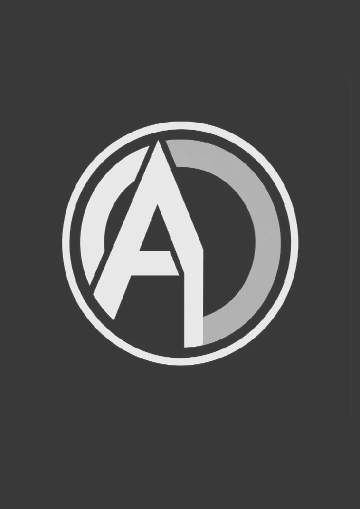
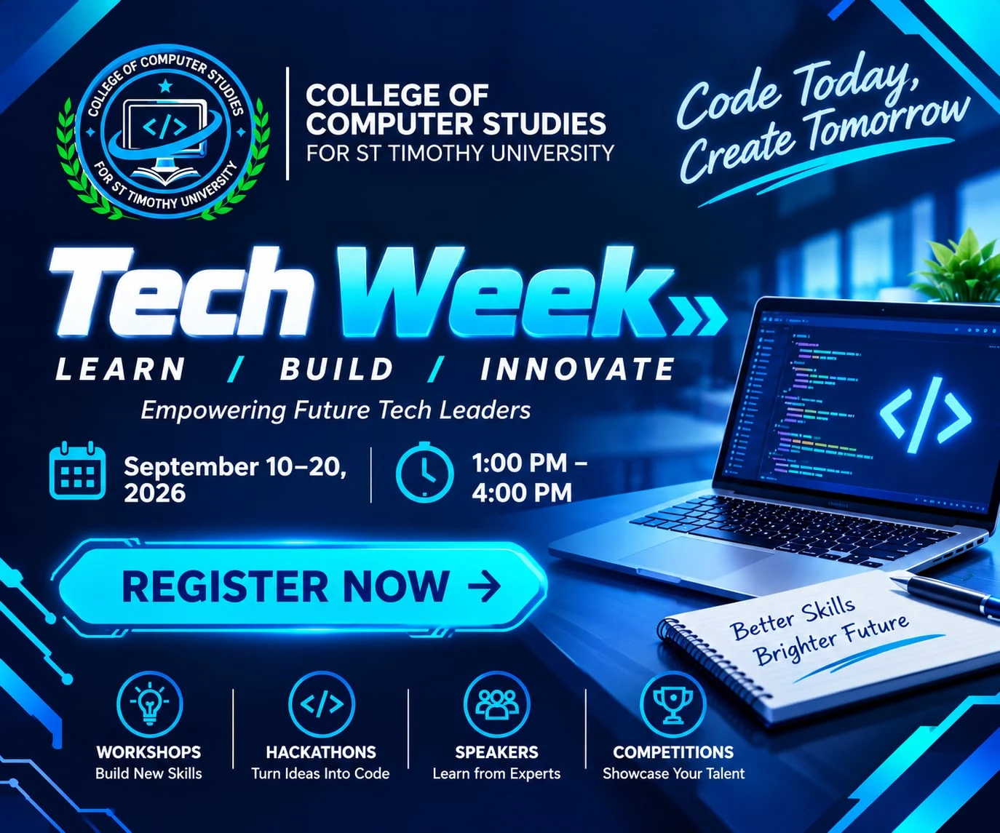
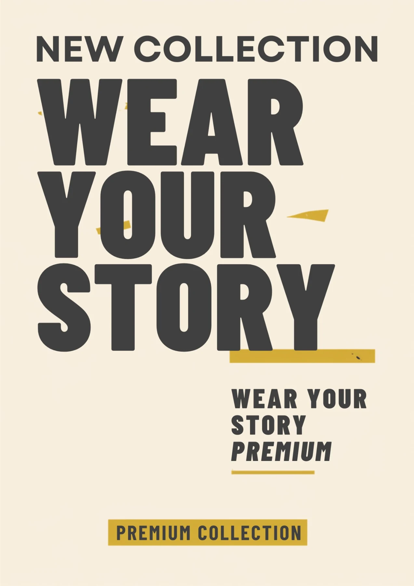
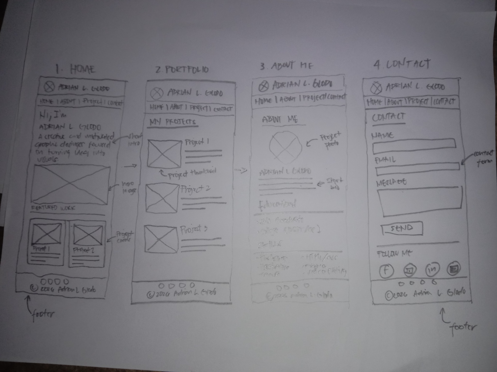
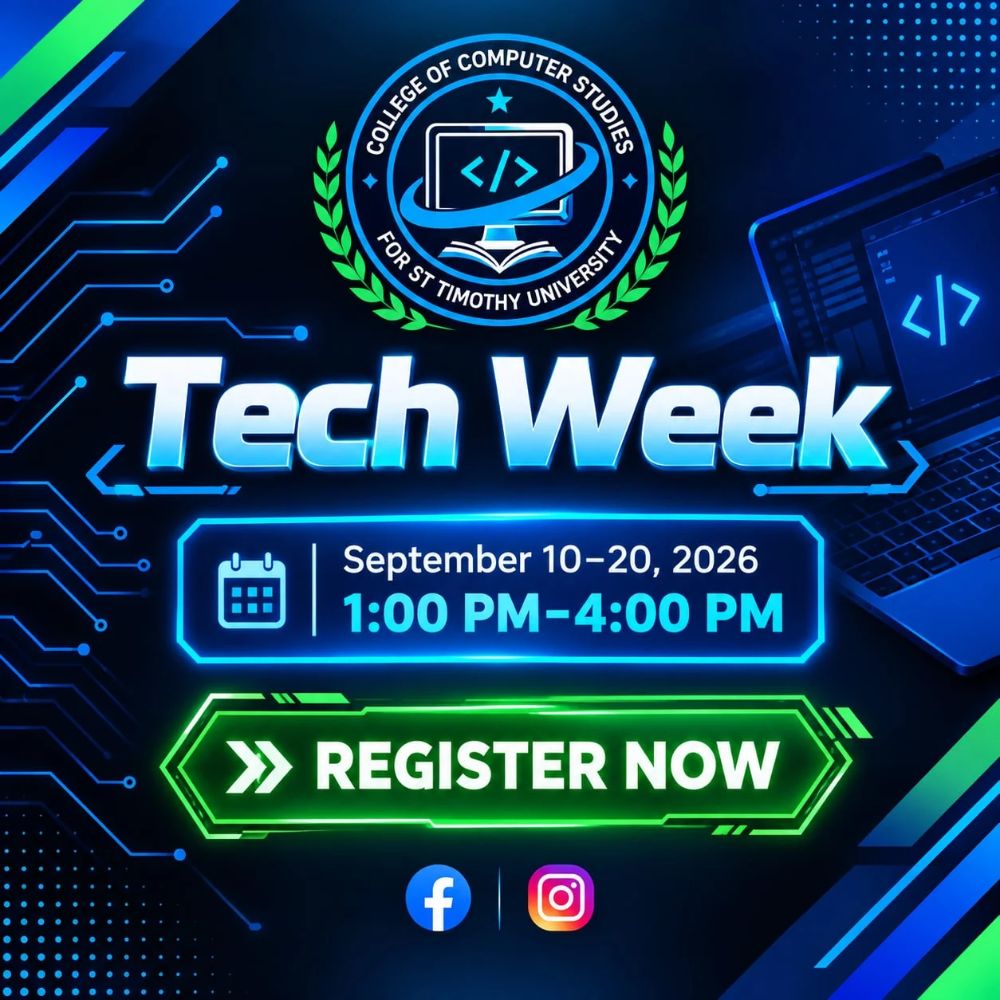
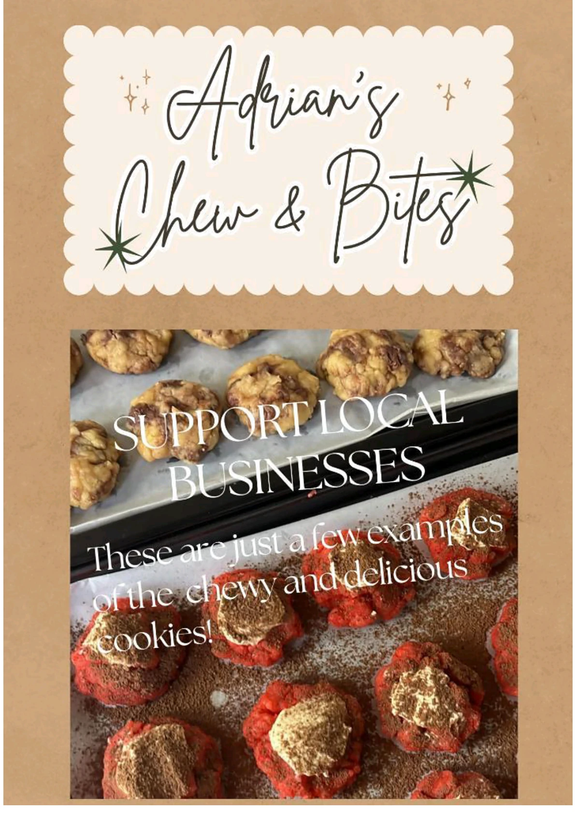
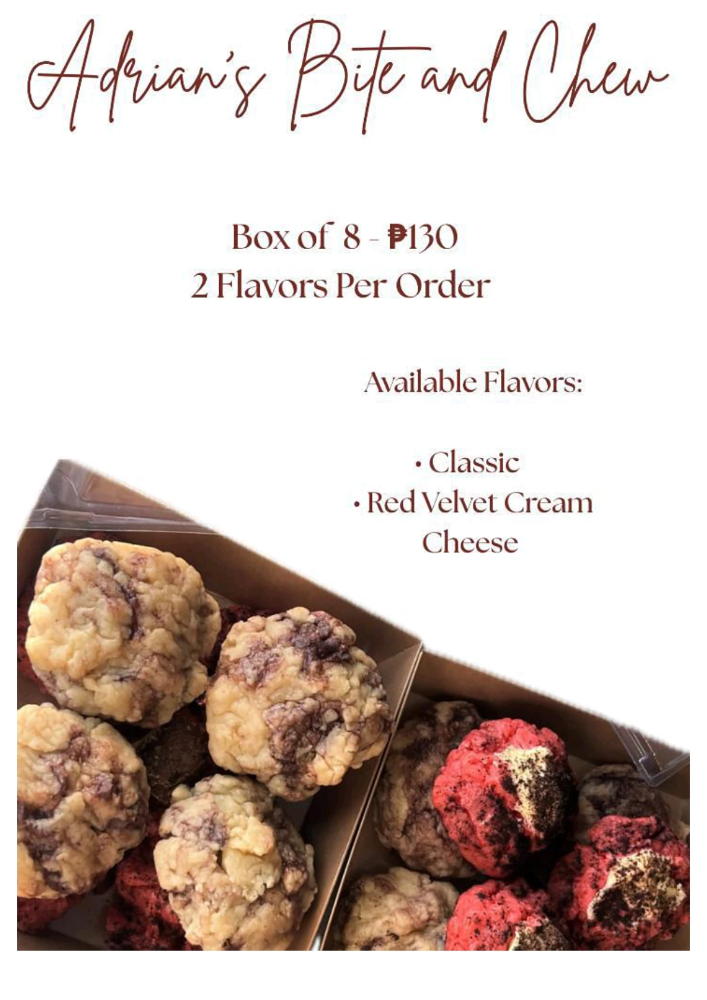
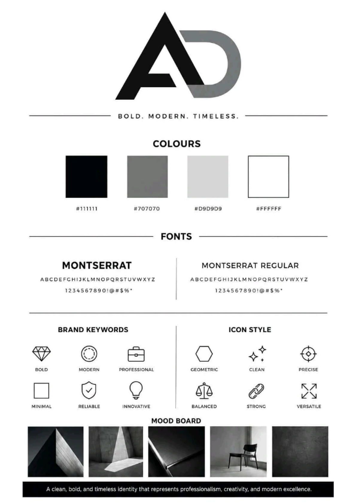

TECH WEEK — CAMPAIGN
Promotional Design / Event Poster
Hi, I'm Adrian L. Glodo — exploring creativity through thoughtful design, bold visuals, and digital work.
↗
I'm Adrian L. Glodo. This space brings together my graphic design activities, visual experiments, and creative projects. Each piece reflects a chance to explore new concepts, styles, and ways of communicating ideas.
Beyond graphic design, I'm interested in the intersection of technology, digital tools, and visual storytelling. I enjoy turning ideas into visuals that feel bold, clear, and intentional.
From event promotions to product advertisements, these visuals are created to capture attention and deliver a clear message.
EXPLORE THE WORK ↗

This portfolio website also includes the original hand-drawn wireframe that guided the structure of the Home, Portfolio, About, and Contact sections. It shows the planning process behind the final layout.

Creative and technical areas I explore through coursework and personal projects.
Layout composition / Typography / Posters / Flyers / Visual identity
Concept development / Visual storytelling / Promotional materials
Technical coursework / Coding / Problem solving
Computing fundamentals / Networking concepts / Digital tools
* Areas of interest and learning — not formal proficiency ratings.
Projects, posters, creative experiments and visuals — collected in one place.
Promotional Design / Event Poster
Monogram / Logo Design
Typography / Advertising

Social Media / Event Promotion

Food Poster / Advertisement

Product Flyer / Editorial Layout

Moodboard / Design System
END OF CURRENT COLLECTION — MORE TO COME.
Interested in a project, collaboration, or just want to say hello? You can reach out using the message form below.